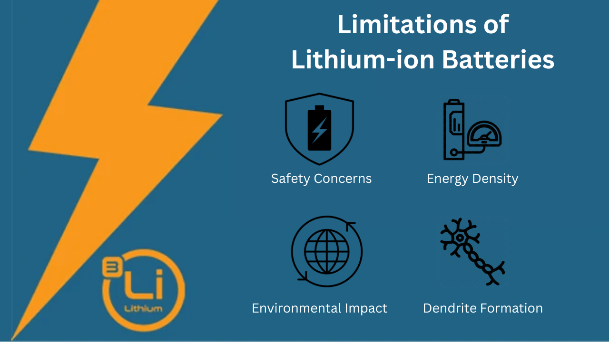
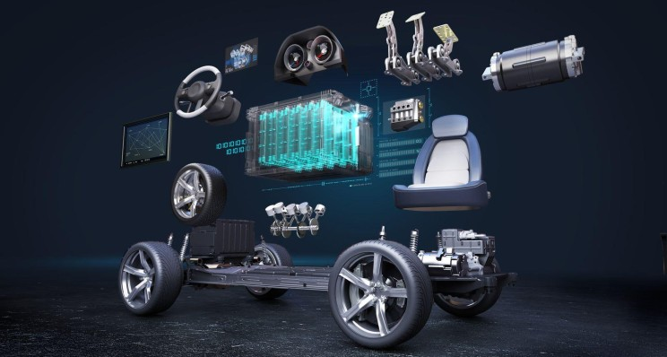
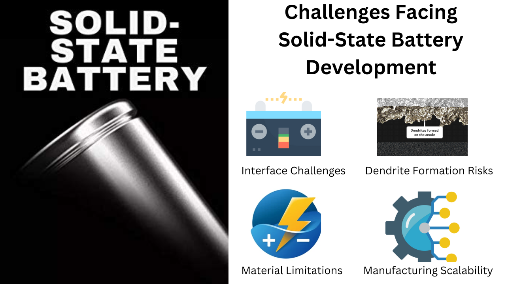

Lithium-ion batteries have become the cornerstone of modern energy storage, powering everything from smartphones to electric vehicles (EVs). However, they come with significant drawbacks that have spurred interest in alternative technologies, particularly solid-state batteries (SSBs). This blog explores the critical issues with lithium-ion batteries and the potential advantages of SSBs, while also addressing the challenges that hinder their development.
Limitations of Lithium-ion Batteries

- Safety Concerns
Lithium-ion batteries are known for their susceptibility to thermal runaway, a condition where excessive heat causes a battery to catch fire or explode. This risk is primarily due to the flammable liquid electrolytes used in these batteries, which can leak and ignite under certain conditions. While incidents are relatively rare, the potential for catastrophic failure remains a significant concern for manufacturers and consumers alike.
- Energy Density
The energy density of lithium-ion batteries typically hovers around 250 Wh/kg, which limits their efficiency and range in applications like electric vehicles. As demand for longer-lasting power sources increases, this limitation becomes increasingly problematic.
- Dendrite Formation
During charging, lithium metal can form dendrites—spike-like structures that grow on the anode. These dendrites can pierce the separator between electrodes, causing short circuits and further increasing safety risks. This phenomenon not only poses a danger but also reduces the overall lifespan of the battery.
- Environmental Impact
The extraction of lithium and other materials used in lithium-ion batteries raises environmental concerns. Mining operations can lead to habitat destruction and water pollution, while the disposal of spent batteries poses additional ecological challenges.
The Promise of Solid-State Batteries
Solid-state batteries offer several advantages that could address many of the limitations associated with lithium-ion technology:

- Enhanced Safety
By utilizing solid electrolytes instead of liquid ones, SSBs significantly reduce the risk of fires and explosions. Solid electrolytes are non-flammable and less prone to leakage, making them inherently safer than their liquid counterparts.
- Higher Energy Density
SSBs have the potential to achieve energy densities up to 1440 Wh/kg, which is substantially higher than traditional lithium-ion batteries. This increased energy density could enable longer ranges for electric vehicles and more compact designs for portable electronics.
- Longer Lifespan
The solid electrolytes used in SSBs are less susceptible to degradation over time compared to liquid electrolytes. This characteristic could lead to longer-lasting batteries with better cycle stability, making them ideal for applications requiring longevity.
- Faster Charging Times
Solid-state batteries can potentially be charged more quickly than lithium-ion batteries due to their superior ionic conductivity and thermal stability. This capability would greatly enhance user experience in consumer electronics and EVs.
Challenges Facing Solid-State Battery Development
Despite their numerous advantages, several challenges hinder the widespread adoption of solid-state batteries:

- Interface Challenges
The interface between solid electrolytes and lithium metal anodes can lead to undesirable reactions that affect battery performance. Issues such as poor contact and interfacial resistance can limit ionic conductivity, reducing overall efficiency.
- Dendrite Formation Risks
While SSBs reduce some risks associated with dendrite formation, they are not entirely immune. Lithium dendrites can still form at the anode interface during charging, posing safety risks and potentially leading to short circuits.
- Material Limitations
Many solid-state electrolytes currently exhibit low ionic conductivity, which is crucial for efficient battery operation. Research is ongoing to discover or develop materials that can overcome these limitations while remaining cost-effective for mass production.
- Manufacturing Scalability
Developing scalable manufacturing processes for solid-state batteries remains a significant challenge. The costs associated with producing these advanced materials can be prohibitive, limiting their commercial viability compared to established lithium-ion technologies.
Conclusion
While lithium-ion batteries have served us well over the past few decades, their limitations in safety, energy density, and environmental impact have prompted a search for alternatives like solid-state batteries. Despite facing significant challenges in material science and manufacturing scalability, SSBs hold great promise for revolutionizing energy storage across various industries.
Ongoing research into innovative materials and engineering solutions aims to address these challenges, suggesting a bright future for solid-state technology as it moves closer to commercialization. As we continue to innovate in this space, solid-state batteries could play a crucial role in shaping a more sustainable energy landscape.